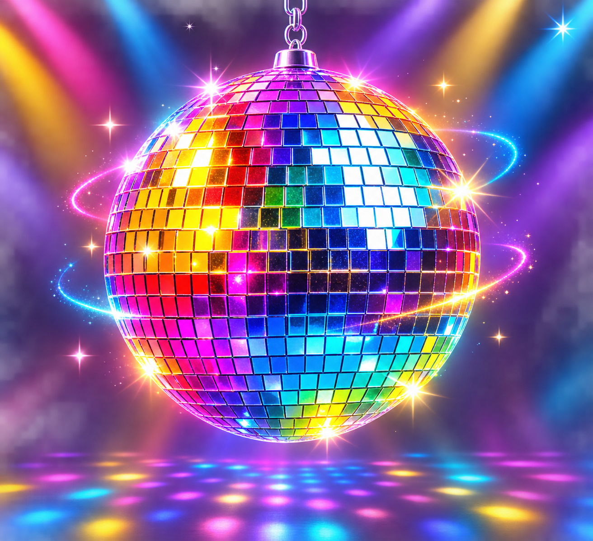

MAJLIS APRESIASI
Langkah Kecil, Kenangan Terindah
Mengabadikan setiap senyuman, menghargai setiap usaha dan meraikan kenangan yang tercipta bersama.
Jelajahi Kenangan ✨Sebuah Kisah, Sejuta Kenangan
Every Little Step Matters
Setiap langkah kecil membawa makna yang besar. Di sebalik setiap perjalanan, tersimpan kisah, kasih sayang, pengorbanan dan kenangan yang tidak ternilai.
Majlis Apresiasi ini menjadi ruang untuk kita mengenang perjalanan, meraikan kebersamaan dan menghargai insan yang telah mencipta kenangan bersama.
Detik Kegembiraan
A Celebration Full of Joy
Ucapan Apresiasi
Penghargaan buat semua insan yang istimewa.
Hiburan & Persembahan
Meraikan suasana dengan keceriaan dan muzik.
Detik Kenangan
Menyimpan memori indah untuk dikenang.
Galeri Kenangan
Moments We Treasure Forever
Langkah Kecil, Kenangan Terindah
"Ada kenangan yang mungkin berlalu, tetapi setiap senyuman dan kebaikan akan terus hidup di dalam ingatan."